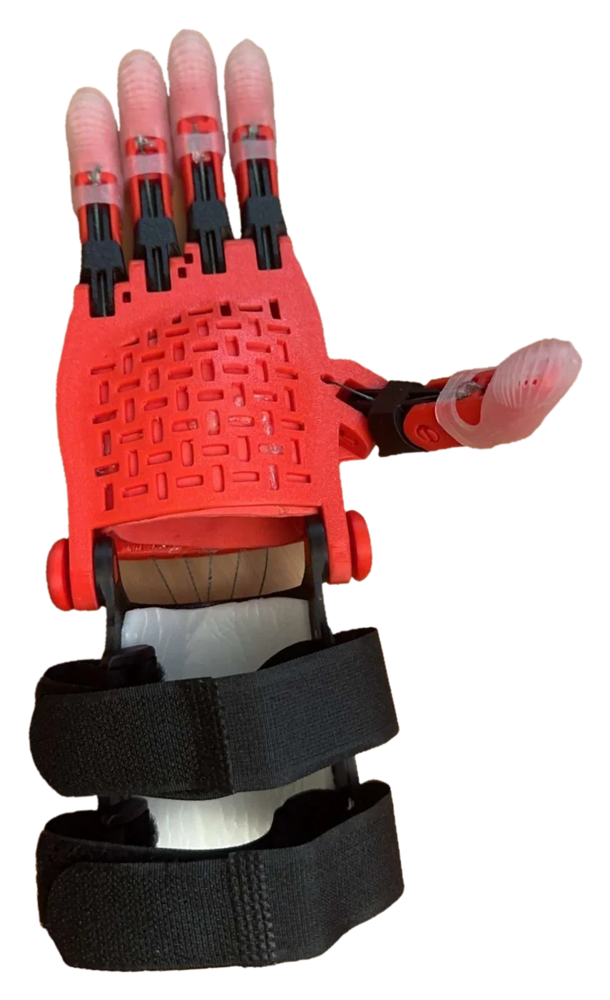
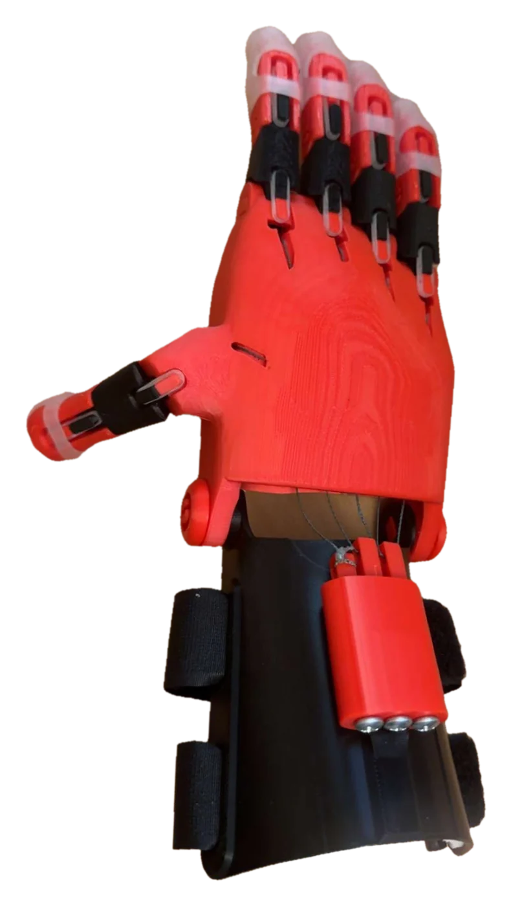

e-NABLE Prosthetic Hand
A 3D-printed hand based on the e-NABLE Phoenix v2, which I adapted in Tinkercad for one specific person. It took four design revisions before every finger moved fully.
- Role
- Prosthetics design lead
- Location
- East Northport, NY
- Dates
- May–Aug 2025
- Tools
- Tinkercad, 3D printer, PLA


Summary
I tailored the e-NABLE Phoenix v2 design in Tinkercad and delivered a working 3D-printed prosthetic hand to the person it was made for. First I checked how its 15+ moving parts fit and moved in a digital assembly. Then it took 4 design revisions to get full finger articulation.
Problem
e-NABLE is a volunteer network that 3D prints prosthetic hands. Its website lists many people who need one, and I picked one of them. The hand had to fit that person, and every finger had to be able to flex.
Design
I modeled the fingers, joints, and palm as one digital assembly in Tinkercad. That let me check how all 15+ moving parts fit and moved together before I printed anything.
I scaled the Phoenix v2 down to fit this person, then resized the joints so the fingers could still flex.
Build
I printed the parts in PLA, a common 3D-printing plastic, on a 3D printer at a local library.
Testing and iteration
Flexibility was the main problem. I worked through this person’s fit and motion issues over 4 design revisions, each one a separate print, until every finger moved fully.
Results
- Moving parts verified in the digital assembly: 15+
- Design revisions: 4
- Result: full finger articulation
- Delivered to the user
What I’d change
I’d research materials other than PLA. I’d also use SolidWorks to check how the joints flex before printing them.